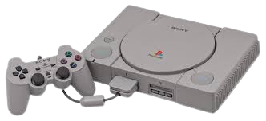
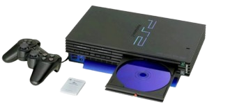
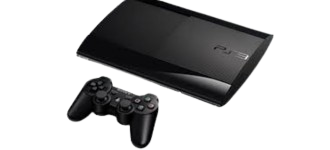
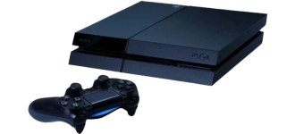
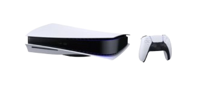

Aquí podrás ver las consolas de PlayStation
| Consolas | Especificaciones | Precio salida | ||
|---|---|---|---|---|
|  | Fue lanzado en Europa el 29 de septiembre de 1995. Especificaciones: Capacidad de cálculo de 30 MIPS. Ancho de banda del bus de 132 MB/s. Caché de datos de 1 kB. Resoluciones: desde 256 x 224 hasta 740 x 480. Frame Buffer ajustable. Tablas de búsqueda de colores ilimitadas. |
360€ | ||
|  | Fue lanzado el 4 de marzo del 2000. Especificaciones: Frecuencia de reloj del Sistema: 294.912 MHz 24 KB Caché (16 KB Instrucciones + 8 KB Datos) 32 megabytes RAMBUS DRAM (128mb en modelos DTL-T10000) 400 MHz (800 MHz efectivos) 800 megabits por segundo por pin Ancho de Banda de 3.2 gigabytes por segundo |
450€ | ||
|  | Fue lanzada el 11 de noviembre del 2006 Especificaciones: 3,2 GHz de velocidad. 1 núcleo principal y 8 núcleos adicionales. memoria caché de nivel 1 con 64 kb de capacidad y caché de de nivel 2 de 512 kb. NVIDIA SCEI RSX de 550 Mhz. Tiene 512 MB de RAM distribuidos entre 2 memorias. Almacenamiento de 320 GB |
600€ | ||
|  | Fue lanzada el 15 de noviembre del 2013
Especificaciones:
Dispone de un microprocesador de ocho núcleos 1.6 GHZ fabricado por AMD 8 GB de memoria RAM Tarjeta gráfica AMD Radeon con 8 GB de memoria Resolución máxima de 1080p, frecuencia de actualización máxima de 30 Hertz Disco duro de 420 GB |
399€ | ||
|  | Fue lanzada el 12 de noviembre del 2020
Especificaciones:
Procesador de 8 núcleos a hasta 3,5 GHz Procesador gráfico con 36 unidades de cálculo hasta 2,23 GHz 16 GB de RAM GDDR6 con bus de 256 bits 16 GB a 448 GB/s de ancho de banda Unidad SSD de 825 GB |
499€ | ||